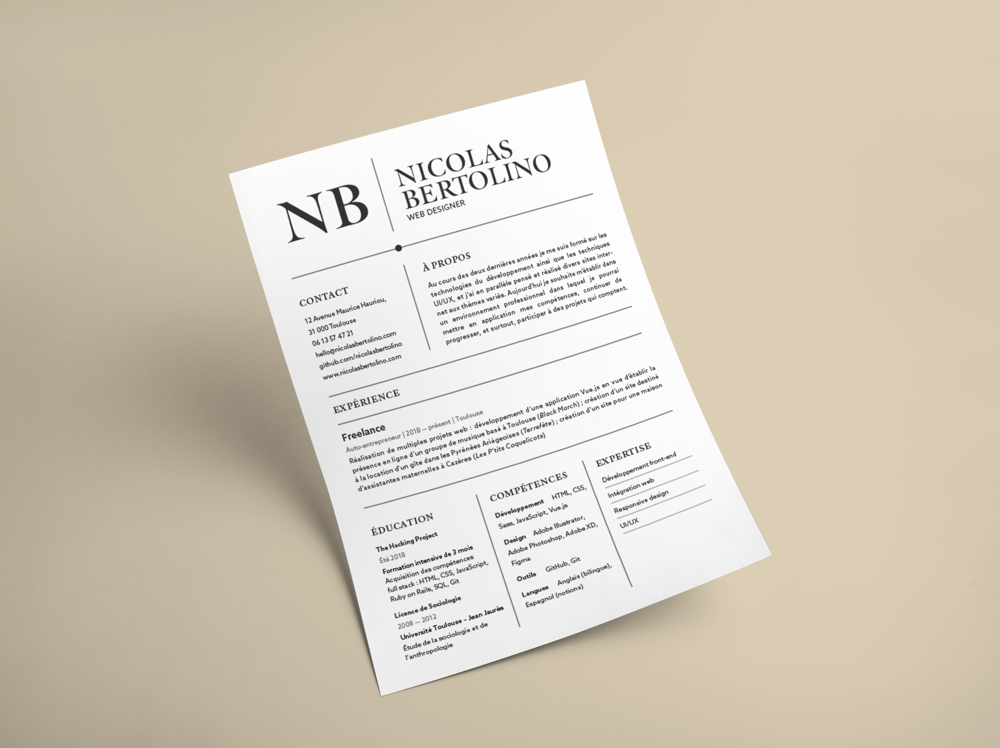

Mon CV en PDF
N.
A bit about myself
Un jour, mon cerveau gauche et mon cerveau droit ont signé un pacte de coopération. Depuis je design et développe des sites engageants et modernes, que les visiteurs aient le béguin et se souviennent de mes clients.
Dans une précédente vie, j'étudiais la sociologie et l'anthropologie. J'aime tenir compte de ce que nous apprennent les sciences humaines sur nos façons de penser et de faire des choix.